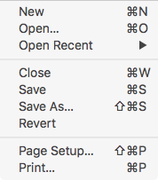

Create a New Document
By default, Balthisar Tidy automatically creates a new, blank document when it starts.
You can also create a new document by selecting New in the File menu. 
New documents’ Tidy options will automatically be set to those in Preferences.